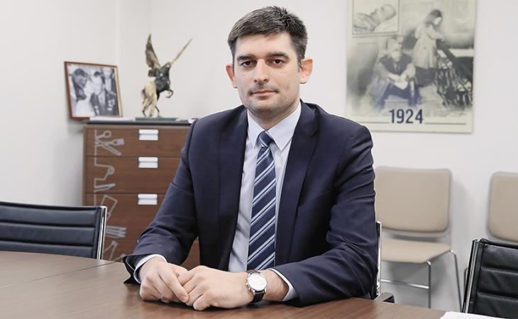

Молодые лидеры СКФО прошли обучение в Экспертной медиашколе
Участники семинара прошли обучение у специалистов федерального уровня по работе в медиасреде посредством соцсетей, получили навыки представления позитивного образа регионов СКФО
Сергей Чуев, кандидат исторических наук, генеральный директор библиотек юго-востока Москвы:
"Эти семинары очень нужны, потому что они работают с той аудиторией, которая формулирует смыслы, которая их доносит до широкой аудитории. И то, что Фонд Президентских грантов поддержал проект Экспертной медиашколы, это очень позитивный момент. Его, конечно, нужно масштабировать, тиражировать. У нас в стране очень не хватает масштабных проектов, которые бы, с одной стороны, эти смыслы формулировали, с другой стороны — их воспроизводили в масштабах страны, конкретного региона, конкретного муниципалитета.
У нас есть очень серьезный вакуум понимания того, куда мы идем, что мы получим через 5-10 лет в масштабах любого политического образования. А здесь, у нас, есть ребята, которые являются лидерами общественного мнения своих территорий, республик, субъектов. То, что государство обратило на них внимание в очередной раз (этого, конечно, недостаточно), это позитивно.
Я считаю, что нам нужно работать плотнее, использовать интеллектуальный потенциал этих ребят, потому что они не витают в облаках, они стоят на земле, они общаются с людьми, читают реальные отклики, видят реальные комментарии, реальную ситуацию, и нам этого очень не хватает.
Те, кто работает с медиасмыслами, медиасредой, медиаконтентом, они должны быть все охвачены идеологией нашей общности. Эта идеология, пока, не всем понятна. Она не до конца сформулирована. Кроме того, есть определенная борьба смыслов. Есть либеральное крыло, есть патриотическое, есть реакционное, есть и разные другие, но нам нужно приходить к консенсусу. Находить то здравое зерно, которое объединяет всех, независимо от политических симпатий-антипатий. Иначе, мы будем, как лебедь рак и щука растаскивать нашу общность на отдельные сегменты и, по сути, не помогать сплочению, а вносить вклад в разрушение и растворение, атомизацию нашей общности".